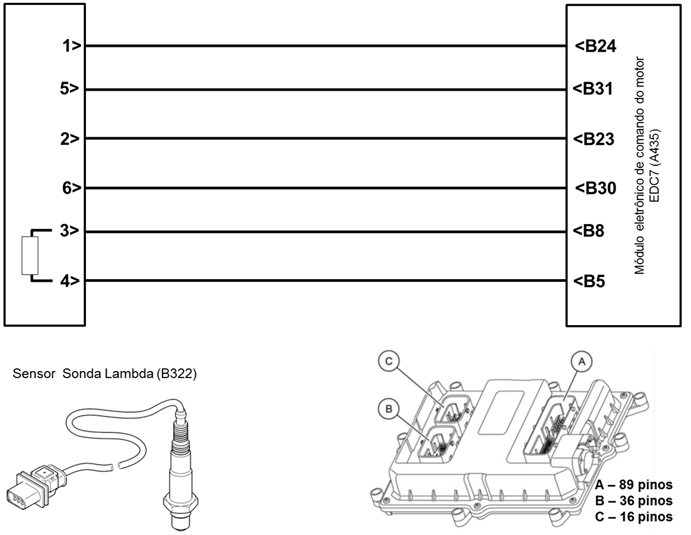

|

Descrição da Falha
Calibração do circuito de temperatura da sonda lambda, sinal muito baixo.
Indicação de Falha
Luz de alerta acende constantemente
em vermelho com símbolo  e ativa o alarme sonoro
curto, com o veículo andando ou parado. e ativa o alarme sonoro
curto, com o veículo andando ou parado.
A LIM permanece desligada.
Estratégia de Monitoramento
O módulo EDC7 monitora o sinal de
calibração de temperatura quanto ao sinal muito alto, ou sinal
muito baixo.
Efeito da Falha
O módulo EDC7 adota um valor emergencial.
Possíveis Falhas
FMI 1: Sinal muito alto.
FMI 2: Sinal muito baixo.
Aviso
 Não há aviso específico para este código. Não há aviso específico para este código.
Registros de Falhas em Outros
Módulos de Comando
Não.
Considerar os esquemas
elétricos do veículo
| Verificação
|
Medição
|
Eliminação da
Falha |
|
Sonda lambda
|
Utilize o Tester Box e
consulte o manual Verificação EDC7 C32:
- Medir a resistência entre os pinos B24
e B31
Valor nominal:
30 - 300 Ω
Utilize o Tester Box e
consulte o manual Verificação EDC7 C32:
- Medir a resistência entre os pinos B08
e B05
Valor nominal:
2 - 4 Ω
|
– Verificar os cabos
quanto a rompimento ou oxidação
– Verificar as conexões
quanto a mau contato ou pino torto
– Substituir a sonda
lambda.
|
Ligação de conectores da
sonda lambda
| Pino |
Número do cabo / cor do cabo
|
Função |
Módulo eletrônico de
comando do motor EDC Pin |
|
1
|
60183
/ vermelho |
Corrente pulsante
|
B24
|
| 2 |
60185 / amarelo
|
Massa
virtual |
B23 |
| 3 |
60396 / branco
|
Ativação do sincronismo do aquecedor,
aquecimento da sonda (–)
|
B08 |
| 4 |
60397
/ cinza |
Alimentação de aquecimento da sonda +Ubat
|
B05 |
| 5 |
60184
/ verde |
Resistência de compensação (corrente de
equilíbrio)
|
B31 |
| 6 |
60186
/ preto |
Voltagem real
|
B30 |
Tester
Box:

|